TURF STUDY · 04 · 2026.10.28
왼쪽은 이번 작업 시작 전, 오른쪽은 보정 후입니다. 카메라·조명·공의 중심과 크기·재생 위치를 맞췄습니다. 모든 이미지는 CPU 참고 렌더이며 실제 브라우저나 휴대폰 캡처가 아닙니다.
| 보정 | 동작 |
|---|---|
| 잔디 접촉 | 공의 아래쪽 구면과 닿는 잎만 짧게 굽혀 눕히고 접촉 음영을 공 바로 밑에 맞췄습니다. 공이 뜨면 눌림과 접촉 핵심 음영이 사라집니다. 지형이나 공의 높이는 바꾸지 않았습니다. |
| 골프공 | 색 점 대신 둥글게 파인 딤플의 노멀과 얇은 코팅 반사를 적용했습니다. 먼 거리에서는 밉맵으로 미세한 무늬를 줄입니다. |
| 경사 흐름 | 50cm 격자선 위의 짧은 표시가 각 축의 낮은 쪽으로 이동합니다. 경사가 강할수록 빨라지고, 평지에서는 사라집니다. 연습 화면의 ‘경사 방향’으로 켤 수 있습니다. |
| 경사 설명 | 앞뒤 경사만 있는 경우에도 오르막·내리막을 표시합니다. 좌우와 앞뒤가 모두 0일 때 평지로 표시합니다. |
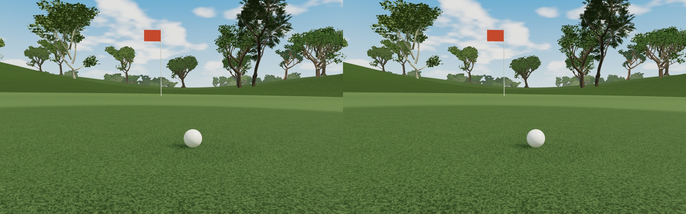
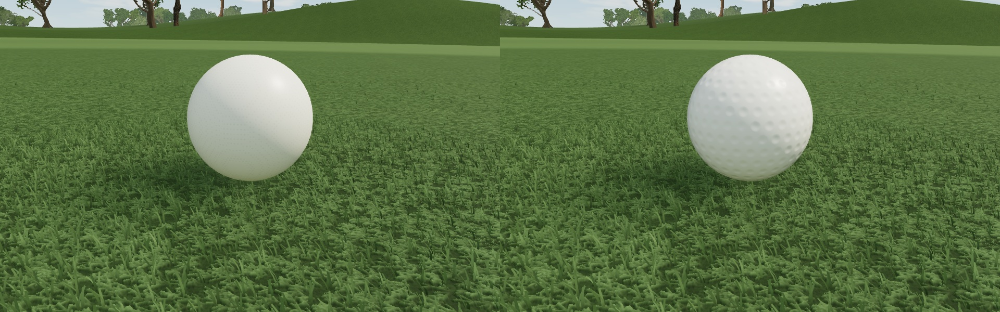
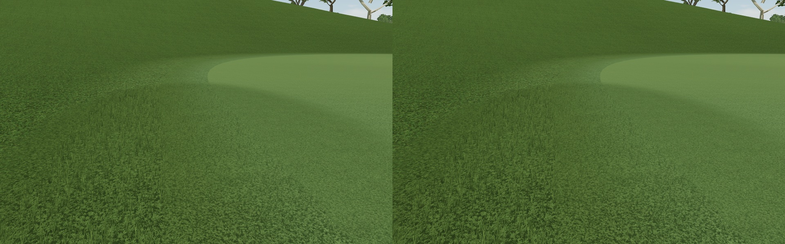
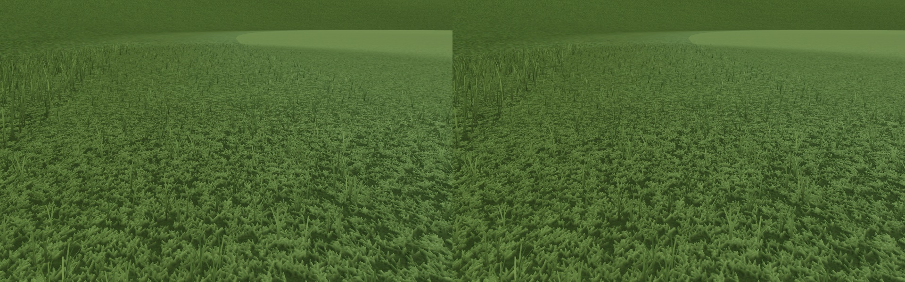
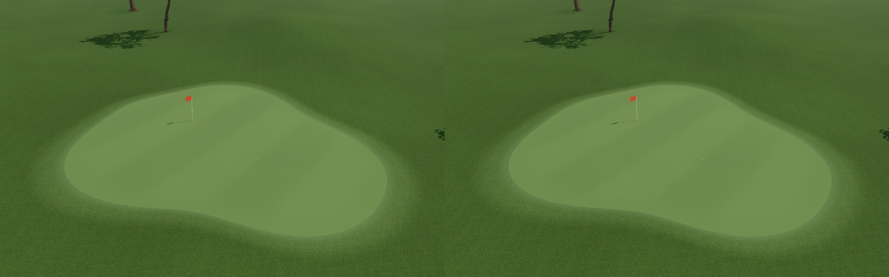
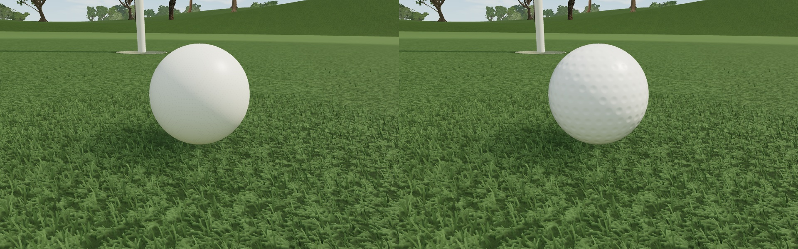
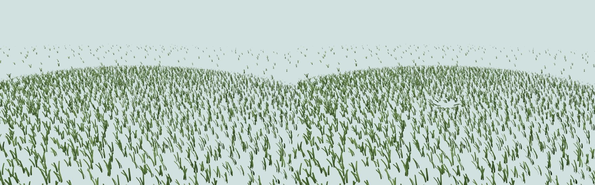
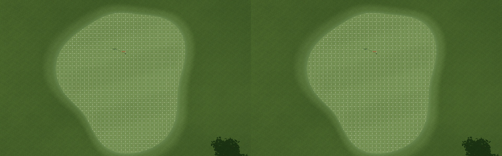
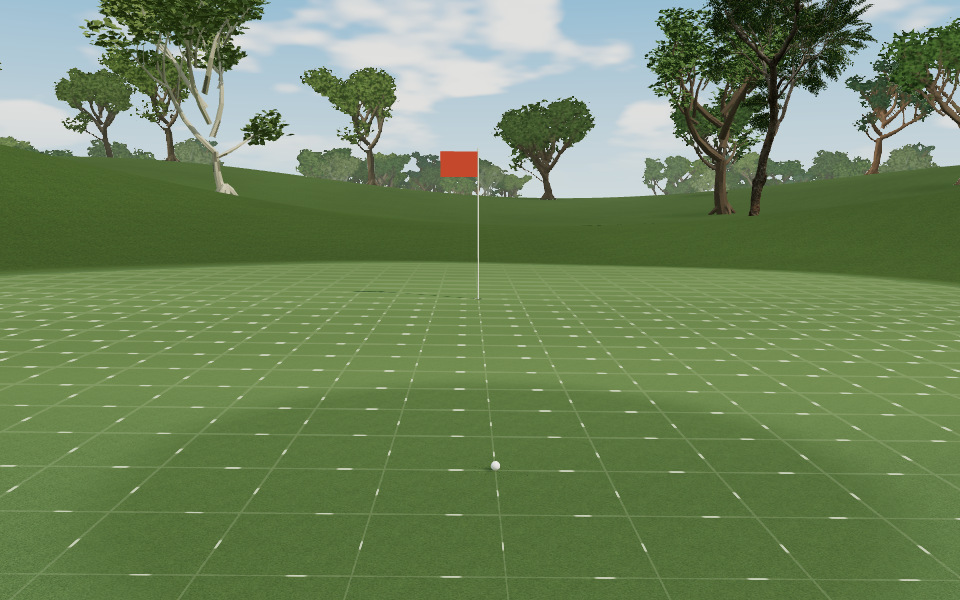
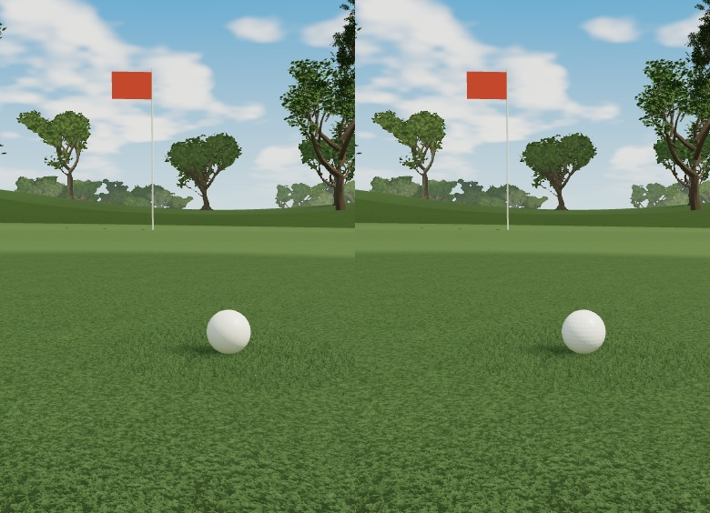
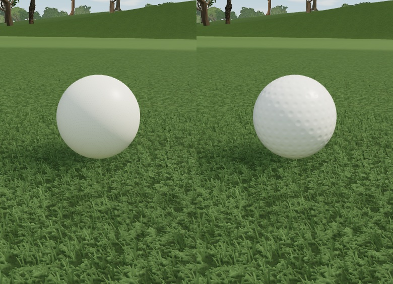
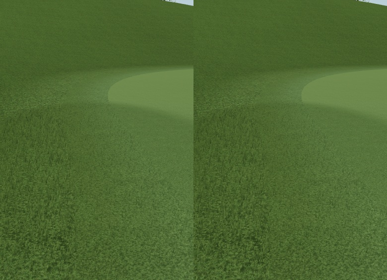
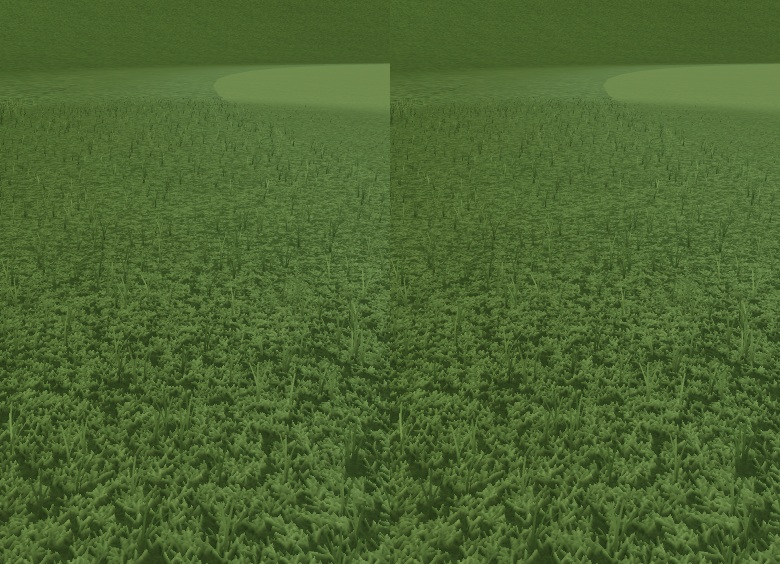
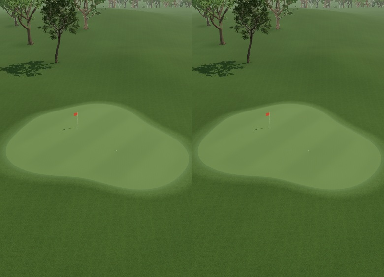
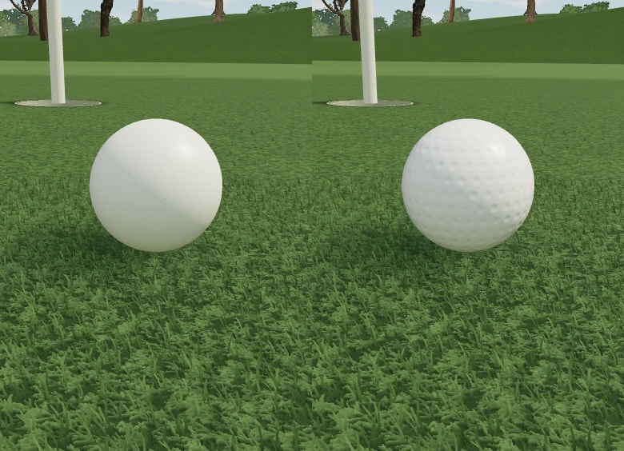
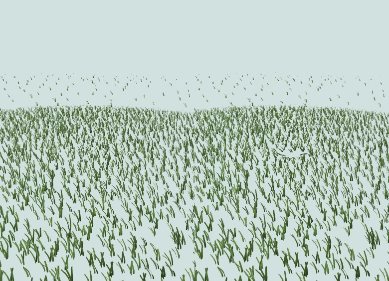
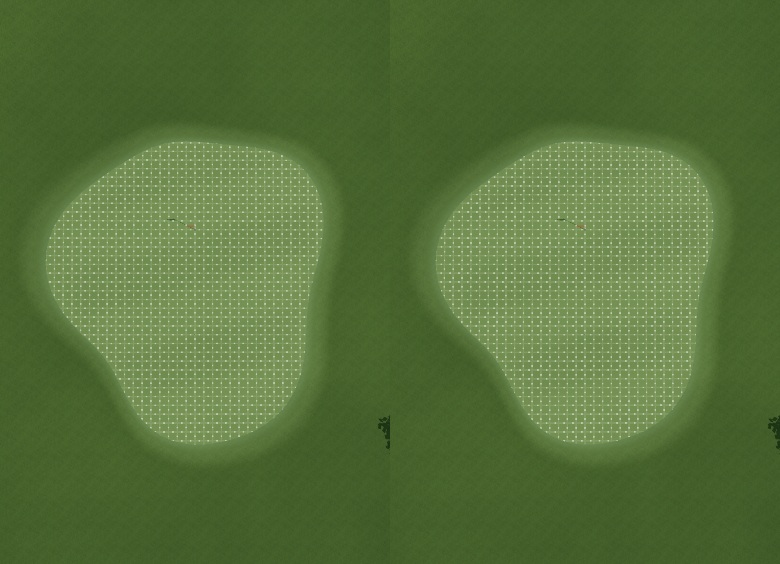
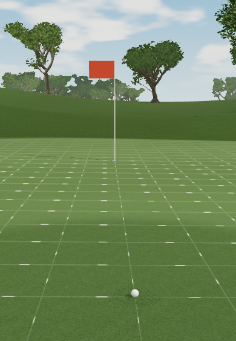
공의 중심·반지름, 홀·깃발, 퍼팅 면, 수목의 배치와 기하, 궤적의 좌표·높이·시간을 전후 대조했습니다. 공중의 외부 궤적에서 잔디가 변하지 않는지, 정지·탐색 후 같은 화면이 나오는지도 검사했습니다. 경사 흐름은 양 축의 양수·음수 방향과 속도를 실제 셰이더 픽셀로 확인했습니다. 정지된 준비 화면에서 흐름에 의한 추가 갱신을 최대 30회/초로 제한하며 숨김·평지·동작 줄이기·탭 숨김·재생 단계에서는 흐름의 추가 렌더를 멈추는지 검사했습니다. 이 수치는 CPU 환경의 일정 검사이며 실기기 FPS 측정값이 아닙니다.
잔디 삼각형 예산은 216,000 / 118,800 / 54,000으로 유지했습니다. 공 노멀 텍스처는 밉맵 포함 약 2.7MiB를 추가하고, 공의 코팅 조명과 잎의 접촉 계산 및 경사 표시 셰이더 비용이 생깁니다. 작업용 브라우저 연결이 없어 실제 브라우저의 재생·회전·PNG 저장을 검증하지 못했고, 모바일 실기기의 FPS·GPU 시간·메모리 측정도 수행하지 못했습니다. 잎의 각진 단면과 밀도 경계에 대한 품질 판단도 남아 있습니다. 현재 5.15초 퍼팅은 화면 확인용 샘플입니다.